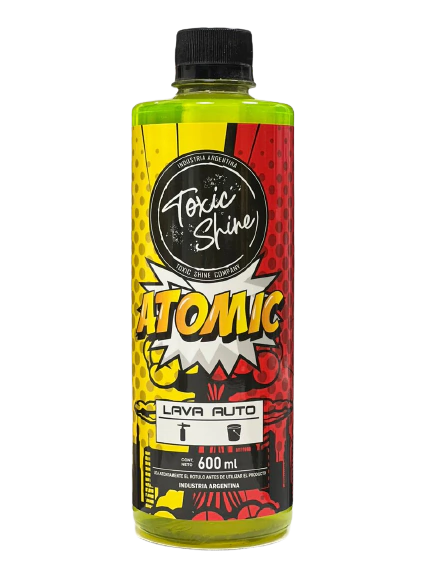

Toxic Shine - Toxic Atomic Shampoo
Shampoo neutro de alta espuma, seguro para vehículos con sellados cerámicos.
- Presentación: 600ml
- Precio: $9.800
Descripción
Toxic Atomic es un shampoo automotor de pH neutro pensado para el lavado de mantenimiento. Genera abundante espuma que ayuda a desprender la suciedad sin castigar la pintura, y es apto para vehículos protegidos con sellador o recubrimiento cerámico.
Características
- Fórmula de pH neutro
- Alta espuma, desliza mejor el guante
- Seguro con sellados cerámicos
- Apto para lavado de mantenimiento
Modo de uso
- Enjuagá el vehículo para sacar el polvo suelto.
- Prepará la mezcla en un balde con agua, según la dosis de la etiqueta.
- Lavá con guante de microfibra, de arriba hacia abajo.
- Enjuagá con abundante agua y secá con paño de microfibra.
Seguí siempre las indicaciones de la etiqueta del envase.